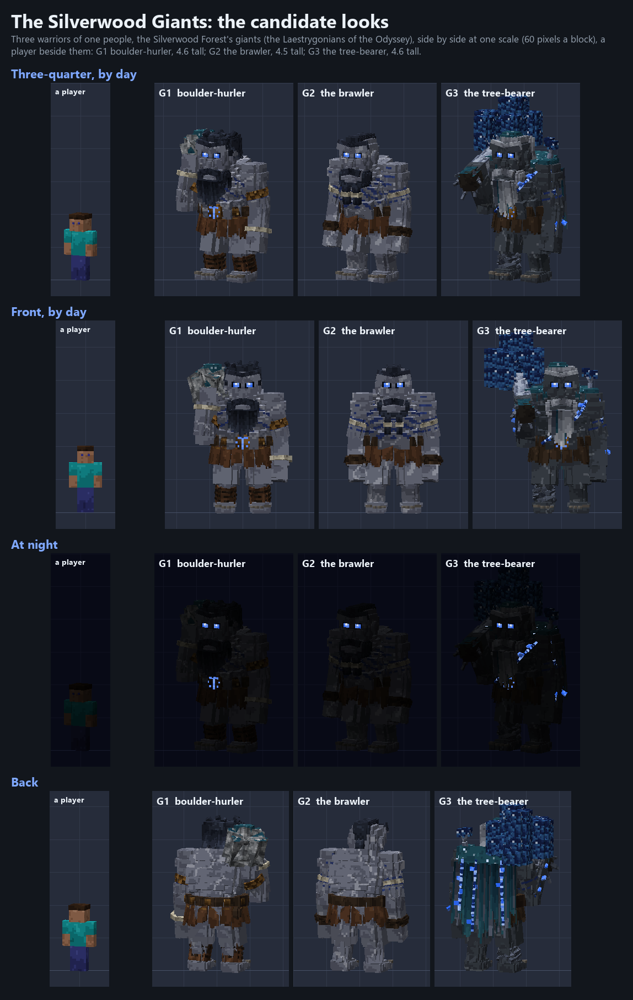
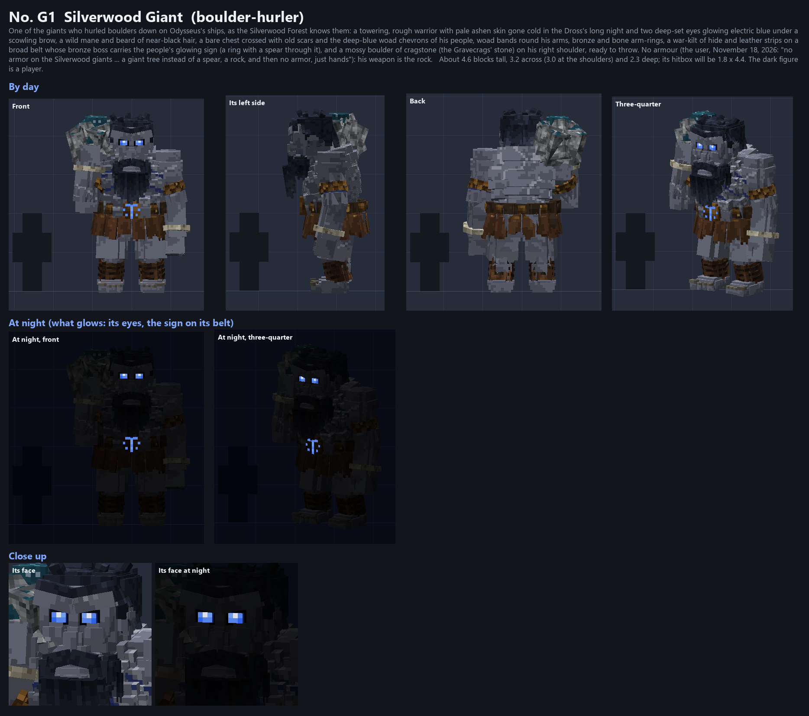
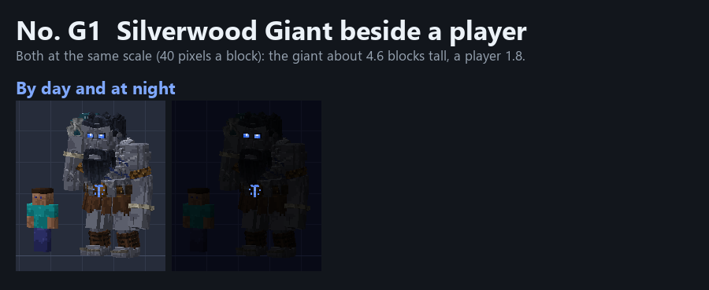
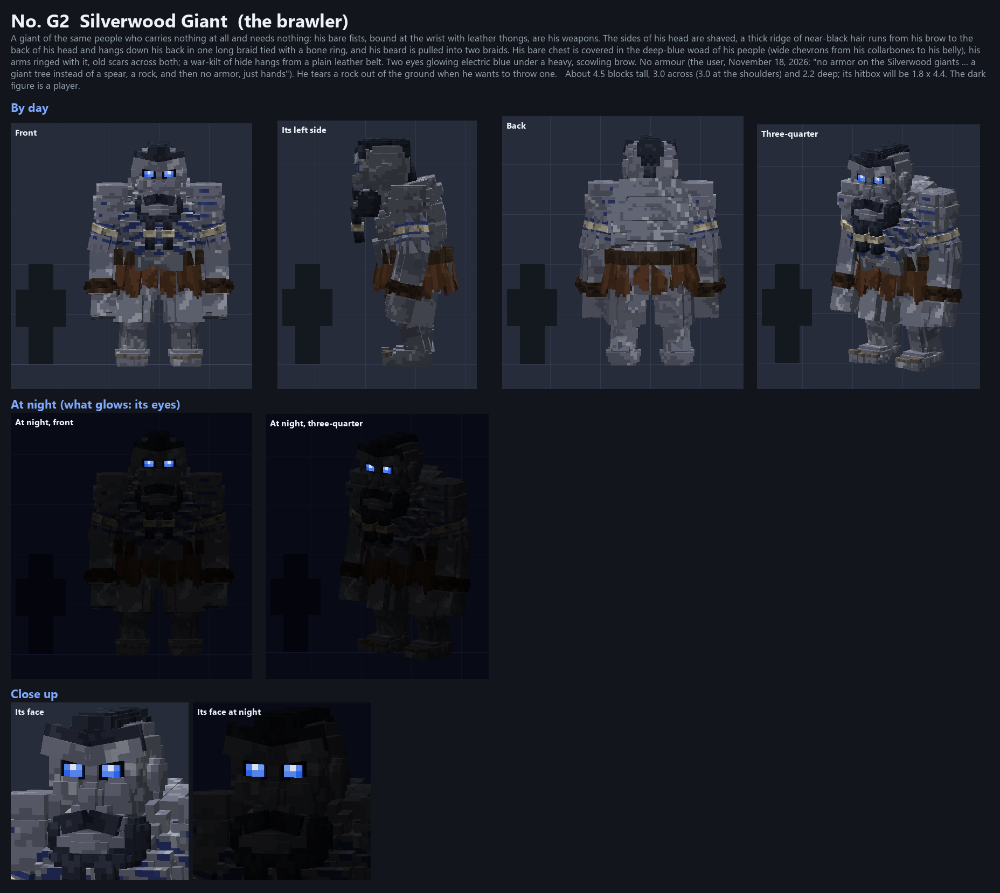
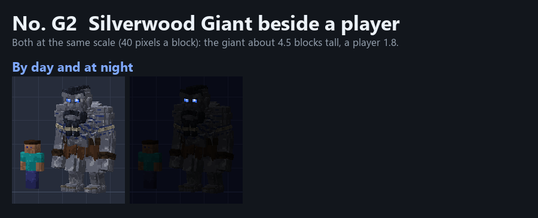
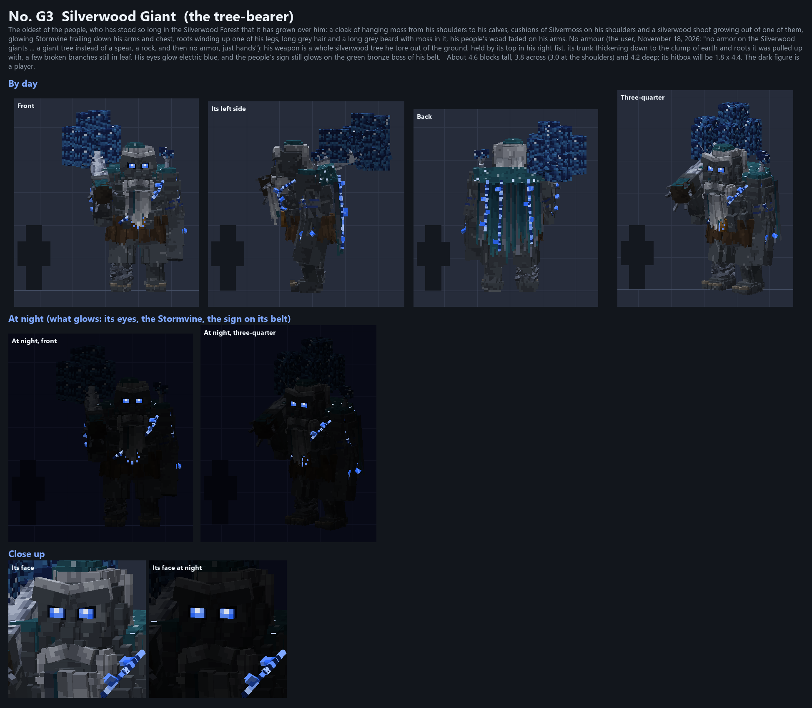
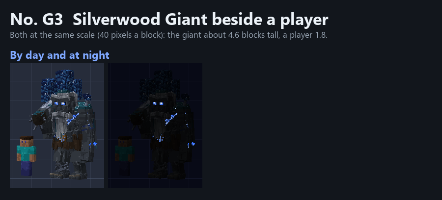

The Silverwood Forest's new mob (QUEST_PLAN.md, working name Silverwood Giant): the giant warriors of the Odyssey, the Laestrygonians, who hurled boulders down on Odysseus's ships and speared his men, in the Dross's own dress: about 4.5 blocks tall, their eyes glowing electric blue. They're one people (one body, one face, the same deep-blue woad marks, bronze arm-rings and the glowing sign of a ring and a spear), so the three looks could be three members of one tribe. Three looks to pick from; each is built on the bones the next stage will animate. Made by tools/forest_giant/build.py.
all_giants.png: the three side by side. Their animations (tools/forest_giant/mobs.py) and their sounds (tools/forest_giant/sounds.py).

A towering, rough warrior with no armour: a boulder on his shoulder ready to throw. 4.6 blocks tall, 3.2 across.
One of the giants who hurled boulders down on Odysseus's ships, as the Silverwood Forest knows them: a towering, rough warrior with pale ashen skin gone cold in the Dross's long night and two deep-set eyes glowing electric blue under a scowling brow, a wild mane and beard of near-black hair, a bare chest crossed with old scars and the deep-blue woad chevrons of his people, woad bands round his arms, bronze and bone arm-rings, a war-kilt of hide and leather strips on a broad belt whose bronze boss carries the people's glowing sign (a ring with a spear through it), and a mossy boulder of cragstone (the Gravecrags' stone) on his right shoulder, ready to throw. No armour (the user, November 18, 2026: "no armor on the Silverwood giants ... a giant tree instead of a spear, a rock, and then no armor, just hands"): his weapon is the rock.


No armour and no weapon: shaved sides, a long braid, woad down his chest, his bare fists. 4.5 blocks tall, 3.0 across.
A giant of the same people who carries nothing at all and needs nothing: his bare fists, bound at the wrist with leather thongs, are his weapons. The sides of his head are shaved, a thick ridge of near-black hair runs from his brow to the back of his head and hangs down his back in one long braid tied with a bone ring, and his beard is pulled into two braids. His bare chest is covered in the deep-blue woad of his people (wide chevrons from his collarbones to his belly), his arms ringed with it, old scars across both; a war-kilt of hide hangs from a plain leather belt. Two eyes glowing electric blue under a heavy, scowling brow. No armour (the user, November 18, 2026: "no armor on the Silverwood giants ... a giant tree instead of a spear, a rock, and then no armor, just hands"). He tears a rock out of the ground when he wants to throw one.


The oldest, grown over by the forest: moss, Stormvine, no armour, a whole uprooted silverwood tree. 4.6 blocks tall, 3.8 across.
The oldest of the people, who has stood so long in the Silverwood Forest that it has grown over him: a cloak of hanging moss from his shoulders to his calves, cushions of Silvermoss on his shoulders and a silverwood shoot growing out of one of them, glowing Stormvine trailing down his arms and chest, roots winding up one of his legs, long grey hair and a long grey beard with moss in it, his people's woad faded on his arms. No armour (the user, November 18, 2026: "no armor on the Silverwood giants ... a giant tree instead of a spear, a rock, and then no armor, just hands"): his weapon is a whole silverwood tree he tore out of the ground, held by its top in his right fist, its trunk thickening down to the clump of earth and roots it was pulled up with, a few broken branches still in leaf. His eyes glow electric blue, and the people's sign still glows on the green bronze boss of his belt.

